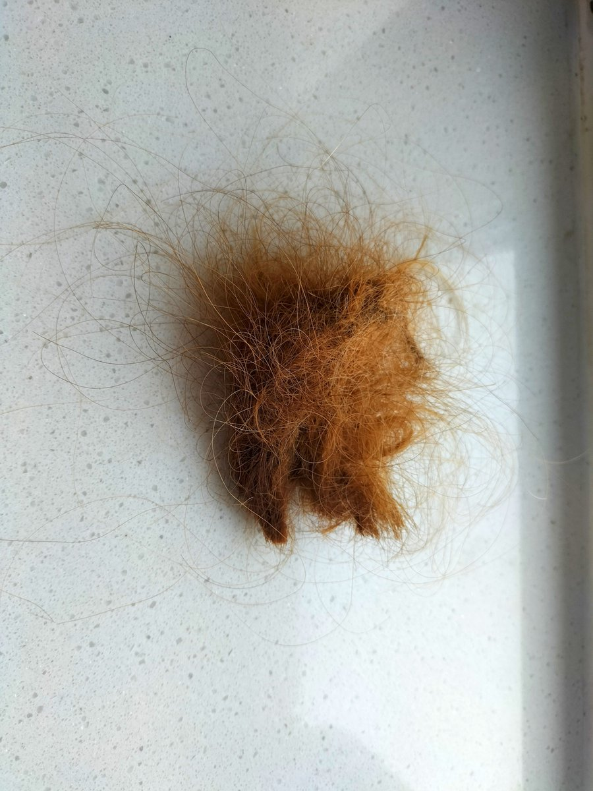

𝓶𝓸𝓻𝓽𝓲𝓼ですわ
@0Yowlry
@RonaldSimmonsUS 什么颜色

Ronald Simmons🇺🇸🦅✝️
@RonaldSimmonsUS
我的头发被剪了。😭
我的头发一天不洗就会开始打结，一周不洗就会黏成一团。
前几天因为水压不足，一直没有洗澡，也没有洗头，结果今天头发就黏成这个样子，没办法，只能剪掉了。
我决定以后不再特意去给头发做护理了，每天只用普通的洗发水洗一次，感觉再怎么护理也没用，最后还是会打结。 https://t.co/cwBFmYdkyx